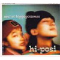

strange music page
japanese strange music * * * hi-posi
#ハイポジです。
別にストレンジでもマイナーでもないですけど、もう。
タワレコに山積みになってるし。
京浜兄弟社のオムニバスに参加してたのとは別バンドです、ほとんど。
もりばやしさん、結婚しちゃったらしいですけど。やらしー声は健在です。
最近はニューウェーブな音になっちゃって、ちょっと気に入らないです。
個人的には"かなしいことなんかじゃない"と"グルオン"がオススメ。あと、"君の声は僕の音楽"も。
|
- ハイポジ(もりばやし + 近藤 + あらき)
- ハイポジ(もりばやし + 近藤)
- ハイポジ(もりばやし)
|
#脳天気といった言葉がよく似合うCDだと思います。ふにゃふにゃした質感の変なポップスです。今のハイポジからは想像もつかないです。
- 写真にチュ〜
- さかさまの世界地図
- じのじの
- 僕の言葉に訳せない
- デンワdeデート
- ハラペコ星人来日
- 10F
- もりばやしみほ (vocals,keyboards)
- 近藤研二 (guitars,banjo,ukulele)
- あらきなおみ (bass,chorus)
- 菊地成孔 (saxes)
- 外山明 (drums,percussions)
- 山口優 (keyboards,machine)
- 佐々木史郎 (trumpet,flugel horn)
- 村田陽一 (trombone)
- 関島岳郎 (tuba)
- 松前公高 (machine)
- 和田博己 (clap)
- 西田ひろみ (violin)
- 増井朗人 (trombone)
- Mint-Lee (machine)
東芝EMI: TOCT-6136
- FF(instrumental)
- Pool's Paradise
- 君の成分表示
- セミ・ヌード
- マンドリル
- あべこべカタマンゴ
- ナウマン象
- だんご虫の歌
- REW(instrumental)
- もりばやしみほ (vocals,piano,keyboards,machine)
- あらきなおみ (bass,chorus)
- 近藤研二 (guitars,banjo,chorus,SE)
- 山口優 (machine,MS-20,16tr)
- 外山明 (drums)
- 菊池成孔 (tenor sax,baritone sax)
- 佐々木史郎 (trumpet,flugelhorn)
- 村田陽一 (trombone)
- 菊地潔 (piano on 3.5.6.)
- NOGERA (conga on 2.3.5.)
- 沢田浩司 (uplight bass on 8.)
- 池松由美子 (chorus on 8.)
- ヤン富田 (steel-pan on 2.8.)
- 和田博己 (percussions on 2.)
東芝EMI: TOCT-6233 (1991.7.26)
#1994年にbiosphere recordsからリリースされた、2人になったハイポジのアルバム。これ聴いた当時はザバダックとかからの流れで聴いたので、いまいちピンと来なかったのを覚えてます。その時は昔東芝EMIからアルバム出してたなんて知る由も無く、メンバー見ても良くわかってなかったので。
久しく見かけないCDになってたんですけど、近所の中古屋さんで\500で売ってましたので買ってきました。収録曲はカバー曲×４＋ハイポジの曲。じゃがたらとかボ・ガンボスとかビートたけしの曲をやってます。
「MOON RIVER」（
HOUSEでもカバーしてますね）とかもイイんですけど、ビートたけしの「嘲笑」が凄く好きです。薄いシンセに優しい感じのアコギ、あと駒沢さんのスチールギター、子供みたいなもりばやしみほさんの声と。(2003.12.22)

- MOON RIVER
- ポケットの中
- そらそれ
- 黒い雨
- 嘲笑
- 僕でありたい
- もりばやしみほ (vocals,pianica,keyboards,whistle)
- 近藤研二 (guitars,ukulele,background vocal)
- 駒沢裕城 (pedal steel guitar on 1.3.5.6.)
- 小玉和文 (trumpet on 1.4.5.)
- 関島岳郎 (tuba on 1.3.)(trombone on 5.)(recorder on 6.)
- 栗原正己 (bass on 2.3.)(computer programming on 4.5.)(keyboards on 5.)(recorder on 6.)
- 川口義之 (baritone sax on 2.3.)(clarinet on 5.)(recorder on 6.)
- 山口とも (bongo,cajon,caxixi,jaws harp on 2.)
- ピアニカ前田 (pianica on 2.)
- OTO (background vocal on 2.)
- 八木康夫 (background vocal on 2.)(6-strings ukulele on 3.)
- ピノ晃 (keyboards on 3.)
- 横銭ユージ (drums on 3.)
- 松永孝義 (acoustic bass on 4.)
- エマーソン北村 (portable hammond organ on 4.)
biosphere records: ZA-0003 (1994)
#最初は
biosphere recordsからリリースされていたものです。なんだかだいぶ雰囲気が変わって、ちょっとオシャレな感じもするエッチなポップスになっちゃってます。
もりばやしみほの声、やらしくてとてもイイです。
- 保存する方法
- ママになっちゃだめ
- 身体と歌だけの関係
- あと何日
- 体重分の愛
- バースディパーティ〜いっぱいだ
- 愛の因数分解 the son of body meets song -remix-
- 身体と歌だけの関係 -private snap-
- もりばやしみほ (vocals,keyboards)
- 近藤研二 (guitars)
- エマーソン北村 (keyboards,organ)
- 栗原正己 (bass,programming)
- 岡部洋一 (percussions)
- 横銭ユージ (drums,percussions)
- 関島岳郎 (euphonium)
- 川口義之 (flute)
- 渡辺貴浩 (sampling)
KITTY ENTERPRISES: KTCR-1325 (1994)
#もりばやしみほ&近藤研二、全力投球って感じの濃密なポップスです。2曲目3曲目の勢いとかスゴイです、もてるもの全て出しきった感もありますけど。すーごいアルバムと思います、参加メンバーもひとくせもふたくせもある人々。聴くべし。
- まだみぬ君
- 理想の♂
- ナミダハ ボーリョク
- だいすきであるが故の努力
- 脈があるのか？
- ひまわり
- あきれるよ
- ぼくらはひとり
- ひまわり reprise
- 台風のどまんなかで
- 重力をなくして
- 最高の前戯 (Naked Version)
- かなしいことなんかじゃない
- しあわせ
- まだみぬ君 reprise
- もりばやしみほ (vocals,piano,keyboards,pianica,percussions)
- 近藤研二 (guitars,dobro,banjo,ukulele,effect,percussions)
- 松永孝義 (wood bass,bass on 2-5.7.10.11.)
- 栗原正己 (bass on 13.)
- Tatsu (bass on 4.)
- 沖山優司 (synth bass on 4.)
- 岡部洋一 (percussions on 2-5.10-13.)
- 佐野康夫 (drums on 2.3.10.11.)
- 久下恵生 (drums on 7.)
- 植村昌弘 (drums on 13.)
- エマーソン北村 (organ on 2.3.7.10.11.)
- KYON (organ on 4.)(piano on 2.10.)
- 近藤達郎 (piano on 1.)
- 菊地成孔 (baritone sax,tenor sax,horn arrange on 3.)
- 相馬充 (flute on 3.13.)
- 栗コーダーカルテット (recorder,alto horn,mellophone,tuba,soprano sax,percussion on 13.)
- 向島ゆり子 (violin on 2.)
- Araya Shoko (snare,cymbal,timpani,tambourine on 6.)
- Kurihara Kyohis (alto sax on 2.)
- Nishizawa Yukihiro (flute on 6.)
- Ishibashi Masakzu (oboe on 13.)(english horn on 6.)
- Minami Hiroyuki (french horn on 6.)
- Tsunami Kiyoshi (trumpet on 2.)
- Kishi Yoshikazu (cornet on 6.)
- Fujita Otohiko (french horn on 13.)
- Wada Hiroyuki (french horn on 13.)
- 佐々木史郎 (flugelhorn on 13.)
- Suzuki Masanori (flugelhorn on 13.)
- Sano Satoshi (trombone on 13.)
- Mizue Yoichiro (trombone on 2.)
- Cotu Cotu (cello on 11.)
- 金子飛鳥ストリングス (strings on 1.6.)
- Tomoda Yoshiaki Group (strings on 11.)
- 桑野聖Group (strings on 13.)
- 駒沢宏城 (pedal steel guitar on 13.)
KITTY ENTERPRISES: KTCR-1387 (1996.8.25)
#マキシシングルシリーズの第2弾、前回はコーネリアスでしたが今回はTOKYO No.1 SOUL SETの川辺ヒロシさんです。相手によって雰囲気変わるものですね。
- 最悪の日々 Pt.1
- 最悪の日々 Pt.2 (the shadow of your smile)
- 最悪の日々 (temporary edit)
produced by 信藤三雄
track & arranged by 川辺ヒロシ
- もりばやしみほ (vocals)
- 近藤研二 (guitars)
- アパッチ田中 (programming,mixing)
- 上原キコウ (programming,engineering)
KITTY ENTERPRISES: KTCR-1437 (1997.5.25)
#NHK衛星の番組、"真夜中の王国"の主題歌にもなったマキシシングルの第3弾。テイトウワプロデュースでメチャメチャポップです、すげー良いです。
- 君の声は僕の音楽 (long call edit)
- 君の声は僕の音楽 (person to person edit)
- 君の声は僕の音楽 (collect call edit)
produced by 信藤三雄,テイトウワ
- もりばやしみほ (vocals)(glockenspiel on 3.)
- 近藤研二 (guitars,chorus)
- テイトウワ (programming,arrangement)(remix on 2.)
- 窪田宏 (electone)
- 越智義之 (percussions)
- 後藤勇一郎カルテット (strings)
- 溝口肇 (string arrangement)
- 佐々田健男 (programming)
Kitty Enterprises: KTCR-1445 (1997.7.16)
#小山田圭吾、川辺ヒロシ、テイトウワとのマキシシングルを全部収録、「もりばやしみほをどう料理する？」みたいな感じのアルバムになってます。でもどの曲でも"エッチな囁き声"みたいなもりばやしさんの存在感の方が強いので、ばらけた感じにはなってないですけど。ただ相方であるはずの近藤研二の存在感はほとんど無いです。
"君の声は僕の音楽"のテイトウワとの相性は物凄く良いように思います、私が聞いたテイトウワのプロデュースの中では一番。
- ようこそ Welcome to house
- ジュンスイムクノテクニシャン Boys be ambitious
- だいじょうぶマイフレンド Dear my friend
- Moon river (New moon remix)
- 笑う女 The woman who talks too much
- 最悪の日々 The shadow of your smile
- 安心のぬるま湯 Heat it up!
- 最悪の日々 Little red riding hood
- それだけ Reason
- 君の声は僕の音楽 You are my music
- もりばやしみほ (vocals)
- 近藤研二 (guitars)
- 小山田圭吾 (arrangement,bass,guitars on 2.)
- Yoshie (percussions on 2.)
- 美島豊明 (programming on 2.)
- 佐々木潤 (acoustic guitar on 3.)
- 太田恵資 (fiddle on 3.)
- 宇田川博史 (bass on 3.)
- 川辺ヒロシ (arrangement on 6.)
- エマーソン北村 (organ,clavinet on 8.)
- 小玉和文 (trumpet on 8.)
- テイトウワ (programming on 5.10.)
- 栗原正己 (arrangement,guitars,glockenspiel on 4.)
- AUDIO ACTIVE (programming,mixing on 7.)
KITTY ENTERPRISES: KTCR-1451
#いつのまにかレコード会社移籍になってたみたいです。なんか、ジャケット見た通りにちょっとテクノっぽくなっています。ただ、もりばやしさんの声とハイポジらしさはそのまんまです。前作はハイポジのアルバムというよりもりばやしさんと色々なアーチストのコラボレーションみたいな感じだったので、このアルバムは"かなしいことなんかじゃない"の続きみたいな気がしています。クレジット見たら
SYZYGYSの冷水ひとみさんが参加していました。あと、栗コーダーカルテットの面々も参加。
- muon
- tabooの上限
- まじめなきもち
- 小っちゃ庭
- 愛情のけちんぼ
- thin film interference
- gluon
- my favourite thing
- theme of a duck
- dipole
- 例えばここに
- ひとっとび
- もりばやしみほ (vocals,keybords,pianica,percussions)
- 近藤研二 (programming,guitars,keyboards)
- 近藤達郎 (orchestration arrangement on 1.3)
- Kuge Yoshio (drums)
- Kashima Tatsuya (bass)
- エマーソン北村 (organ)
- 冷水ひとみ (microtone)
- 佐々木史郎 (flugel horn,trombone)
- Sano Satoshi (trombone)
- 田村玄一 (steel pan)
- 岡部洋一 (percussions)
- 相馬充 (flute)
- Watanabe Isao (tuba)
- Hirano Yoshihiko (clarinet)
- 栗原正己 (recorders,horns)
- 関島岳郎 (recorders,horns)
- 桑野聖Group (strings)
NIPPON COLOMBIA/CONTEMP RECORDS: CTPR-006 (1998.6.20)
#えっと、元町(横浜の)のタワレコで購入。中華街行って来たんですけど、ちょっと元町のほうにいくと全然雰囲気違うみたいですね、びっくり。んで、このCDはマキシなんですけど、やっぱりもりばやしみほさんの声ってエッチですねー。知らなかったんですけど、結婚されたようで....うーん、もったいない。1曲目はホフディランの方の曲、あんまりホフディラン好きじゃないのですがポップで良い曲かも。あと4曲目のリミックスはFantastic Plastic Machineの方によるもの、やっぱり良く知らないけど。(1999.3.21)
- 口笛ふくのはもうやめた
- マイムマイム
- 冒険者たち
- skinflint FPM LUXURY drum'n'bass
remixed by Tomoyuki Tanaka
- もりばやしみほ (vocals,keyboards)
- 近藤研二 (guitars,programming)
- Komiyama Yuhi (keyboards,programming on 1.)
- 岡部洋一 (tialngle,shaker sample on 2.)
- Tanaka Gensyo (drums,percussions on 1.)
- Kitada Maki (bass on 1.)
NIPPON COLOMBIA/CONTEMP RECORDS: COCP-50046 (1999.3.20)
#ハイポジの新譜です。前作は全体に希薄で繊細な雰囲気を持ってたんですけど、今回はキャッチが"テクノdeポップdeニューウェイヴィー"とか言うだけ有って、過剰なほどピコピコバリバリ言っていて、なんかスゴイです。
ま、もりばやしみほさんの声と歌詞があればとりあえずハイポジで有るのはマキシシリーズの時に証明されているとして。気になるのは相方であるはずの近藤研二さんの存在.....本当に存在感が無くなっちゃって。大丈夫かな？(1999.7.19)
- すてきなGOGO
- 避難所システム
- 口笛ふくのはもうやめた
- 実験GIRL
- I LOVE YOUだけ
- 扱いにくいコップ
- 風の角度に
- 空がかなしくなるとね
- 1℃もいったことはない
- 結果永遠
all music & words by もりばやしみほ
sound produced by もりばやしみほ (1.4.6.7.8.)
sound produced by 小宮山雄飛 (3.)
sound produced by テイトウワ (5.)
sound produced by 田中知之 (2.10.)
sound produced by 佐々木潤 (9.)
- もりばやしみほ (vocals,chorus)
- 近藤研二 (guitars,programming)
- 小宮山雄飛 (keyboards,programming on 3.)
- Kitada Maki (bass on 3.)
- anaka Gensho (drums,percussions on 3.)
- Natsuaki Fumihisa (v.drum on 1.4.)
- Mihata Taiji (guitars on 5.)
- Kumahara Masayuki (programming on 1.2.4.6.7.8.9.10.)
- テイトウワ (programming on 5.)
NIPPON COLOMBIA/CONTEMP RECORDS: COCP-50122 (1999.7.17)
#近藤研二さん、抜けちゃいました。「もりばやしみほ = ハイポジ」です。
SPOOZYS(松江潤,Daiko Wataru,Naomi)の人が参加してます。というか音もSPOOZYSとかMOTOCOMPOとかPOLYSICSとかあの辺に似てるよーな。
JUICY FRUITSのカバーの「ジェニーはご機嫌ななめ」は良いです。あと、9曲目も好きです......って事はSPOOZYSとか絡まない方が好きって事かな。
- 性善説
- ジェニーはご機嫌ななめ
- そなえよつねに
- CORE
- 光のコートをきて
- いらないものリスト
- 最大限の愛の証
- きみのすきなかたち
- でんき
- ごめんだわ
- たこあげ
- あたしのselect
- 性善説 again
all music & words by もりばやしみほ
arranged by
もりばやしみほ & 松江潤 (1.4.8.11.13.)
もりばやしみほ & Narita Masaki (5.6.7.10.12.)
もりばやしみほ & Kumahara Masayuki (2.3.)
もりばやしみほ (9.)
- もりばやしみほ (vocals,chorus,chorus)
- 松江潤 (guitars,programming on 1.4.6.7.8.11.12.13.)
- 近藤研二 (guitars,vocorder on 2.3.)
- Daiko Wataru (beats programming on 1.4.8.11.13.)
- Kumahara Masayuki (programming on 2.3.)
- 栗原正己 (bass on 3.)
- 夏秋文尚 (v-drum on 2.3.)
- Naomi (keyboards,organ on 1.4.8.)
- Narita Masaki (programming on 5.6.7.9.10.12.)
- The Clovers (chorus on 12.)
NIPPON COLOMBIA/CONTENP RECORDS: COCP-50352 (2000.7.20)